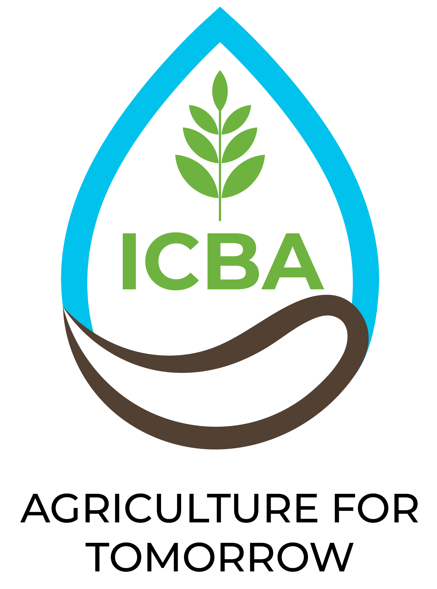
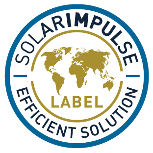
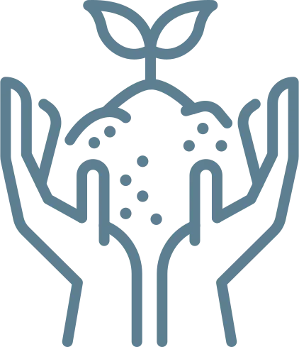

Validé par l'ICBA
L'International Center for Biosaline Agriculture a validé la solution RainCatcher pour l'agriculture en milieux où l'eau est rare.
Presse & distinctions
Une validation indépendante, des distinctions et les articles consacrés à notre travail.
8.1 · Distinctions

L'International Center for Biosaline Agriculture a validé la solution RainCatcher pour l'agriculture en milieux où l'eau est rare.

RainCatcher a été reconnu parmi les solutions qui protègent l'environnement tout en étant financièrement rentables.

RainCatcher a été sélectionné comme finaliste du défi de la Mohamed bin Zayed Water Initiative consacré à l'innovation dans le domaine de l'eau en agriculture.
8.2 · Dans la presse
| Média | Notre résumé | Date |
|---|---|---|
| Le Télégramme (France) | Un constructeur de matériel breton fabrique des machines pour RainCatcher afin d'hydrater les arbres à la racine | sept. 2021 |
| Neozone (France) | Une machine innovante qui place une réserve d'eau aux racines des arbres, avec d'importantes économies d'eau rapportées sur des palmiers dattiers* | juil. 2022 |
| Solar Impulse Foundation | La démonstration sur le coton à Hatay, en Türkiye, comme cas d'usage d'une solution efficace* | 2025 |
| Mohamed bin Zayed Water Initiative | L'étude de cas de RainCatcher en tant que finaliste de l'Al Miyah Challenge | 2026 |
*Résultats observés lors d'essais spécifiques. Chaque exploitation et chaque culture fait l'objet d'une étude agronomique préalable et obtiendra ses propres résultats. Consultez notre avertissement complet.
8.3 · Dossier de presse
Les journalistes peuvent télécharger une fiche de présentation de l'entreprise, des logos, des photographies haute résolution des champs, des machines et de l'équipe, ainsi que des liens vers nos vidéos.
Commencer par une étude
Chaque projet commence par une conversation.